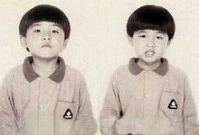
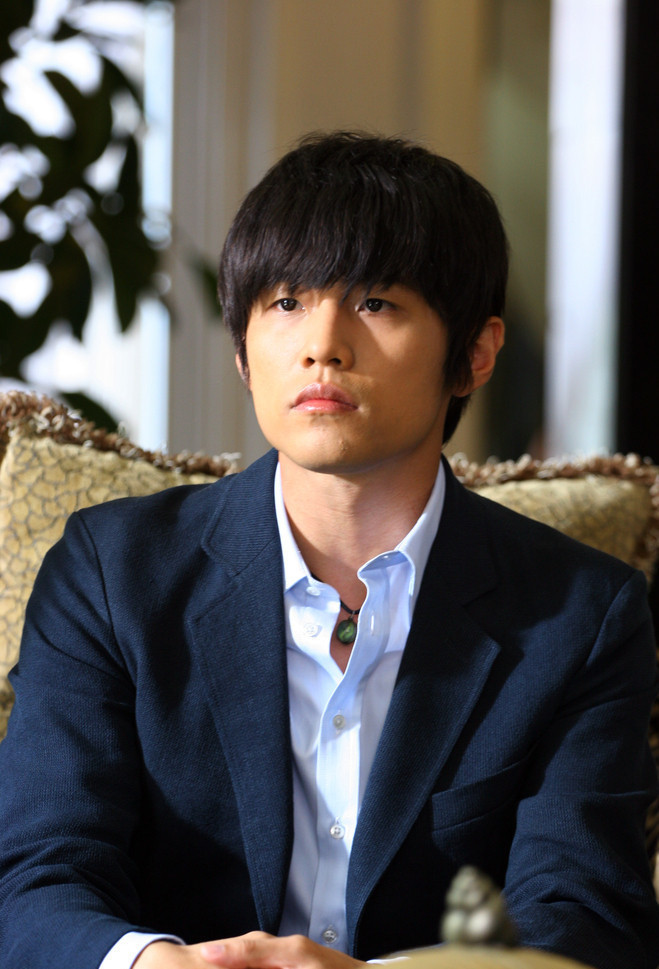

周杰伦
华语男歌手、词曲创作人、演员
周杰伦（Jay Chou），1979年1月18日出生于台湾省新北市，华语男歌手、词曲创作人、演员、MV及电影导演、编剧及制作人。2000年，发行首张个人专辑《Jay》。2001年，发行的专辑《范特西》奠定其融合中西方音乐的风格。2002年，举行“The One”世界巡回演唱会。2004年，登上央视春晚舞台，并演唱歌曲《龙拳》。2005年，凭借动作片《头文字D》获得台湾电影金马奖、香港电影...
基本信息
| 中文名 | 周杰伦 | 外文名 | Jay Chou |
| 别名 | 周董、周导、周先森 | 国籍 | 中国 |
| 民族 | 汉族 | 星座 | 摩羯座 |
| 血型 | O型 | 身高 | 175cm |
| 体重 | 60KG | 出生地 | 台湾省新北市 |
| 音乐成就 | 四届世界音乐大奖最畅销亚洲艺人 | 其他成就 | 美国CNN亚洲最具影响力人物 |
| 影视作品 | 头文字D、不能说的秘密、天台爱情 | 音乐作品 | 青花瓷、七里香、千里之外 |
简介
周杰伦（Jay Chou），1979年1月18日出生于台湾省新北市，华语男歌手、词曲创作人、演员、MV及电影导演、编剧及制作人。2000年，发行首张个人专辑《Jay》。2001年，发行的专辑《范特西》奠定其融合中西方音乐的风格。2002年，举行“The One”世界巡回演唱会。2004年，登上央视春晚舞台，并演唱歌曲《龙拳》。2005年，凭借动作片《头文字D》获得台湾电影金马奖、香港电影金像奖最佳新人奖。2006年，起连续三年获得世界音乐大奖中国区最畅销艺人奖。2007年，自编自导的文艺片《不能说的秘密》获得台湾电影金马奖年度台湾杰出电影奖。 2008年，凭借歌曲《青花瓷》获得第19届金曲奖最佳作曲人奖。2010年，入选美国《Fast Company》评出的“全球百大创意人物”。2011年，凭借专辑《跨时代》再度获得金曲奖最佳国语男歌手奖，并且第4次获得金曲奖最佳国语专辑奖，主演好莱坞电影《青蜂侠》。2012年，登福布斯中国名人榜榜首 。2014年，发行华语乐坛首张数字音乐专辑《哎呦，不错哦》。2016年，推出专辑《周杰伦的床边故事》 ，参演的好莱坞电影《惊天魔盗团2》在中国内地上映，参加综艺节目《中国新歌声第二季》担任导师。演艺事业外，他还涉足商业、设计等领域。2007年成立杰威尔有限公司。2011年担任华硕笔电设计师并入股香港文化传信集团。2014年，担任中国禁毒宣传形象大使。2017年2月14日，周杰伦宣布妻子昆凌怀上二胎。
目录
早年经历
周杰伦出生于台湾省新北市，祖籍福建省永春县。周杰伦4岁的时候，母亲叶惠美把周杰伦送到淡江山叶幼儿音乐班学习钢琴，周杰伦读初中二年级时，他的父母因性格不合离婚，而周杰伦则归母亲叶惠美抚养 。中考时，周杰伦没有考上普通高中；同年，他因为擅长钢琴而被淡江中学第一届音乐班录取。高中毕业以后，他两次报考台北大学音乐系均没有被录取，于是他开始在一家餐馆打工
演艺经历
1997年9月，在自己不知情的情况下，别人帮周杰伦报名参加台湾《超级新人王》娱乐节目，意外获得亚军。以非常奇怪的歌曲参赛，因为害羞，请了朋友演唱，自己伴奏，朋友唱得很烂。吴宗宪从裁判的肩后看了一眼乐谱，大为惊叹。非常地复杂、不是一般的音乐人能够编曲弹奏出来的。”当时自己创立阿尔发音乐的吴宗宪，表演结束后走到后台找周杰伦，把他签了下来。可是，音乐圈里没有一个人喜欢他的歌；

1998年，咻比嘟哗餐厅驻唱；
1999年12月，吴宗宪与周杰伦约定十天时间，如果能写出50首歌，帮他从中选出10首出唱片。周杰伦马上创作，十天时间，周杰伦拿出了五十首歌，每一首都写得漂漂亮亮，谱得工工整整；
2000年11月，以专辑《杰伦》出道；
2001年，发行专辑《范特西》，逐步奠定周杰伦华语乐坛领军地位
2002年2月，周杰伦在新加坡、马来西亚举办首场个人演唱会
2002年4月，个人欧洲版EP－双截棍欧版EP在欧洲发行
2003年7月，全亚洲超过50家电台同步首播《叶惠美》主打歌《以父之名》定7月16日为“周杰伦日”，全亚洲收听率达到8亿人；
2003年，荣登美国《时代》周刊亚洲版封面人物，该杂志赞许他为“新一代的亚洲音乐天王”。周杰伦是继王菲，张惠妹之后，第3位出现在著名的《时代》杂志封面的华人歌手，也是唯一的一位华人男歌手；
2003年，英国流行乐明星克雷格·大卫（CraigDavid）表示：“周杰伦的音乐已经主宰、甚至可能改变亚洲音乐。”
2004年，根据世界最权威的国际唱片业协会(IFPI)数据，周杰伦唱片年度销量世界排名42，成为21世纪唯一进世界前50名的华人歌手。周杰伦也首次获得世界音乐大奖大中华区最畅销艺人。
2006年5月18日，周杰伦蜡像亮相香港杜莎夫人蜡像馆；
2007年，周杰伦在上海八万人体育场开唱，全场爆满。创下史上全世界艺人在挑战该体育场演唱会上的最高纪录。
2007年，周杰伦完成【THE ONE】、【无与伦比】两次世界巡回演唱会，先后在美国康州、内华达州 、加拿大、日本东京、新加坡、马来西亚、泰国、香港 、台湾、大陆各地区举办多场次个人演唱会
2007年4月，杰威尔音乐公司成立；
2008年，继艺人王力宏、张惠妹、金城武、F4后，成为了美国新闻网第5位CNNTalkAsia采访的对象；
2008年，5·12汶川地震，周杰伦捐款总额超过4200万人民币，全台湾艺人最多，并将个人演唱会改为赈灾演唱会，亲自弹奏《蜗牛》等立志歌曲，高喊“汶川加油！”
2008年，歌曲《青花瓷》歌词涉及山东、江苏两地高考成为首位歌词出现在高考中的流行歌。之前周杰伦歌词《蜗牛》《上海1943》《听妈妈的话》已被写进中小学教科书中，《发如雪》歌词被写进日本《通过唱歌记住中国话》书本中，大量歌词出现在中小学语文﹑历史考题。不少教育人事感叹，迄今为止没有哪个流行歌手能与教育有如此“密切接触”；
2008年，美国《FastCompany》杂志评选“全球百大创意人”(The100MostCreativePeopleinBusiness)，他与LadyGaga、jay-z成为“唯三”入榜歌手，同时也是唯一亚洲歌手；
2008年11月，凭借《我很忙》专辑获得每年在摩洛哥举办的“世界音乐大奖”所颁发的“最高销量歌手（大中华区）”，已连获三届(2006年,2007年,2008年)，打破歌神张学友二连冠的纪录；加上2004年，周杰伦已先后获得四次世界音乐大奖。
2008年，韩国中央电视台KBS1TV在中秋假日，播出周杰伦自导自演的影片《不能说的秘密》，二度在韩国掀起狂热。之前这部电影已在韩国各大影院上演，在韩国大受欢迎，丝毫不输给韩国本土同期上映的其他影片。
2008年：在日本武道馆连开两场演唱会，成为继邓丽君、王菲之后第三位在武道馆开唱的华人歌手，也是唯一华人男歌手，演唱会上演唱的中国风歌曲《千里之外》《霍元甲》受到日本fans的强烈欢迎
2009年，美国CNN评选亚洲最有影响力的25位人物，周杰伦入围并被形容为“非凡艺人”
2009年7月，周杰伦澳洲巡演，悉尼演唱会票房空降美国公告牌（Billboard）第二，力压世界R&B天后碧昂斯，成为当年全球单场演唱会票房收入第二的好成绩，也打破了华人在澳洲开唱票房最高纪录
2009年，周杰伦完成第三次【2007—2009世界巡回演唱会】，已先后在美国洛杉矶 、拉斯维加斯 、康涅狄格州 、加拿大多伦多 、温哥华、澳大利亚 、日本东京 、新加坡、马来西亚、泰国 、香港 、澳门 、台湾 、大陆各地区举办多场个人演唱会
2010年,美国古柏第奴(Cupertino)市长黄少雄，为纪念周杰伦对华人音乐的贡献，将订本世纪第一个十年最后一天为古柏蒂奴市的「周杰伦日」；
2010年，周杰伦全球歌曲下载量排名世界第三，仅次于LadyGaga和迈克尔·杰克逊。
2010年，日本“岛歌王子”中孝介致敬周杰伦，翻唱其歌曲《花海》。将其重新填词为日文版，收入于个人专辑《像乐器一样的声音》中
2010年12月，国际小行星命名中心批准，正式将编号为257248的小行星命名为周杰伦星。这颗小行星是由两岸天文爱好者于2009年合作发现的。周杰伦创作了以这颗星为题材的歌曲《爱的飞行日记》 2011年，周杰伦以《青蜂侠》进军好莱坞，美国知名电影网站“screencrave”评选出十大最值得期待的新秀演员。将以《青蜂侠》进军海外市场的周杰伦，成为西方媒体眼中的“潜力股”，不仅顺利跻身十强，还成为榜单上唯一一名亚洲演员代表。
2011年，周杰伦以《青蜂侠》进军好莱坞，美国知名电影网站“screencrave”评选出十大最值得期待的新秀演员。将以《青蜂侠》进军海外市场的周杰伦，成为西方媒体眼中的“潜力股”，不仅顺利跻身十强，还成为榜单上唯一一名亚洲演员代表。
2011年，周杰伦与NBA篮球巨星科比代言雪碧广告，周杰伦创作主题曲《天地一斗》与科比合拍MV，于2011年2月21日在美国加州洛杉矶首发。歌曲的下载收入将全部捐赠给中国希望工程（已筹得超过200万善款）。
2011年12月，日本人气组合Exile致敬周杰伦，翻唱周杰伦歌曲《说了再见》，重新填词为日文版《RealValentine》，收入个人单曲，并在Exile东京演唱会上邀请周杰伦担任嘉宾，周董负责钢琴伴奏部分。周董与Exile分别以中文和日文歌词献唱，现场5万名日本观众掌声雷动。
2012年，周杰伦亲自前往他所捐助的湖南省汨罗市智峰乡希望小学考察善款落实情况，与孩子们互动，亲自弹奏《稻香》励志歌曲，和同学们一起打篮球。
2012年，周杰伦在新加坡F1（世界一级方程式锦标赛）赛车道开唱，成为首位应F1官方邀请的华人歌手。
2012年5月，周杰伦以各项指标的绝对领先，登上福布斯中国名人榜第一位
音乐作品
专辑
| 专辑名称 | 发行时间 | 语言 |
|---|---|---|
| 哎哟，不错哦 | 2014-12-26 | 国语 |
| 十二新作 | 2012-12-18 | 国语 |
| 惊叹号！ | 2011-11-11 | 国语 |
| 跨时代 | 2010-05-18 | 国语 |
| 魔杰座 | 2008-10-14 | 国语 |
| 我很忙 | 2007-11-02 | 国语 |
| 依然范特西 | 2006-09-05 | 国语 |
| 十一月的萧邦 | 2005-11-01 | 国语 |
| 七里香 | 2004-08-03 | 国语 |
| 叶惠美 | 2003-07-31 | 国语 |
| 八度空间 | 2002-07-19 | 国语 |
| 范特西 | 2001-09 | 国语 |
| Jay | 2000-12 | 国语 |
人物评价
周杰伦是流行音乐市场具有革命性和指标性的原创歌手，同时也是影响华语乐坛很深的音乐人。他把中国本土文化和R&B音乐相结合，将R&B这种音乐形态完全中国化，在很大程度上提升了词曲原创人在华人音乐界的地位。他突破亚洲音乐原有的主题和形式，创造出了多变的歌曲风格 。他不仅擅长节奏蓝调、饶舌、西方古典钢琴等等 ，每张专辑都有中国风歌曲也是他的特点之一 。他将Hip-Hop、R&B唱法融入到中国传统音乐当中 ，让中国风变成华语流行音乐的主流曲风 。周杰伦的独特之处还在于他在追求中国风音乐的同时，将文学美与意境美注入到音乐中，使其作为偶像的同时又不失文化品味 。
周杰伦具有独特的唱腔 ，他依靠一种个性化的、自然率真的演唱风格完成其声音的塑造，并通过恰到好处的假声以及语气词的控制来增加作品的表现力 。周杰伦的发音也是其鲜明风格的一部分，他打破了歌手吐字清晰的原则，转而以一种不考虑平仄、突出旋律的方式唱出个性，并将这种个性同青少年听众群对时尚音乐风格的需求进行了恰当的对接。（新华网、《深圳商报》、《流行歌曲》评）
周杰伦是一位非凡的艺人 。他的才华不仅体现在现场即兴创作能力和对乐理、各种乐器的精通，还体现在其不入俗套的创作思路 。他在乐曲中融入各式东西方音乐，比如爵士乐、蓝调、摇滚、那卡西、民谣、嘻哈、美国乡村音乐、电子音乐等等。他不仅将流行音乐进行复杂而微妙的相互融合，还大胆的运用与搭配各类乐器，从而创造出其不意的效果。这种天马行空的创作思路也使得周杰伦的歌曲具有很强的个人风格，并且与任何一种音乐形式都不完全相同 。